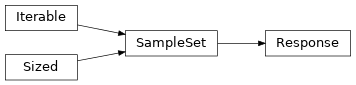

openjij.sampler.response
Contents
openjij.sampler.response#
dimod.SampleSet.Module Contents#
Classes#
Samples and any other data returned by dimod samplers. |
- class openjij.sampler.response.Response(record, variables, info, vartype)[source]#
Bases:
dimod.SampleSetSamples and any other data returned by dimod samplers.
- Parameters
record (
numpy.recarray) – A NumPy record array. Must have ‘sample’, ‘energy’ and ‘num_occurrences’ as fields. The ‘sample’ field should be a 2D NumPy array where each row is a sample and each column represents the value of a variable.variables (iterable) – An iterable of variable labels, corresponding to columns in record.samples.
info (dict) – Information about the
SampleSetas a whole, formatted as a dict.vartype (
Vartype/str/set) –Variable type for the
SampleSet. Accepted input values:Vartype.SPIN,'SPIN',{-1, 1}Vartype.BINARY,'BINARY',{0, 1}ExtendedVartype.DISCRETE,'DISCRETE'
Examples
This example creates a SampleSet out of a samples_like object (a NumPy array).
>>> import numpy as np ... >>> sampleset = dimod.SampleSet.from_samples(np.ones(5, dtype='int8'), ... 'BINARY', 0) >>> sampleset.variables Variables([0, 1, 2, 3, 4])
- aggregate()#
Create a new SampleSet with repeated samples aggregated.
- Returns
SampleSet
Note
SampleSet.record.num_occurrencesare accumulated but no other fields are.Examples
This examples aggregates a sample set with two identical samples out of three.
>>> sampleset = dimod.SampleSet.from_samples([[0, 0, 1], [0, 0, 1], ... [1, 1, 1]], ... dimod.BINARY, ... [0, 0, 1]) >>> print(sampleset) 0 1 2 energy num_oc. 0 0 0 1 0 1 1 0 0 1 0 1 2 1 1 1 1 1 ['BINARY', 3 rows, 3 samples, 3 variables] >>> print(sampleset.aggregate()) 0 1 2 energy num_oc. 0 0 0 1 0 2 1 1 1 1 1 1 ['BINARY', 2 rows, 3 samples, 3 variables]
- append_variables(samples_like, sort_labels=True)#
Deprecated in favor of dimod.append_variables.
- change_vartype(vartype, energy_offset=0.0, inplace=True)#
Return the
SampleSetwith the given vartype.- Parameters
vartype (
Vartype/str/set) –Variable type to use for the new
SampleSet. Accepted input values:Vartype.SPIN,'SPIN',{-1, 1}Vartype.BINARY,'BINARY',{0, 1}
energy_offset (number, optional, defaul=0.0) – Constant value applied to the ‘energy’ field of
SampleSet.record.inplace (bool, optional, default=True) – If True, the instantiated
SampleSetis updated; otherwise, a newSampleSetis returned.
- Returns
SampleSet with changed vartype. If inplace is True, returns itself.
- Return type
SampleSet
Notes
This function is non-blocking unless inplace==True, in which case the sample set is resolved.
Examples
This example creates a binary copy of a spin-valued
SampleSet.>>> sampleset = dimod.ExactSolver().sample_ising({'a': -0.5, 'b': 1.0}, {('a', 'b'): -1}) >>> sampleset_binary = sampleset.change_vartype(dimod.BINARY, energy_offset=1.0, inplace=False) >>> sampleset_binary.vartype is dimod.BINARY True >>> sampleset_binary.first.sample {'a': 0, 'b': 0}
- copy()#
Create a shallow copy.
- data(fields=None, sorted_by='energy', name='Sample', reverse=False, sample_dict_cast=True, index=False)#
Iterate over the data in the
SampleSet.- Parameters
fields (list, optional, default=None) – If specified, only these fields are included in the yielded tuples. The special field name ‘sample’ can be used to view the samples.
sorted_by (str/None, optional, default='energy') – Selects the record field used to sort the samples. If None, the samples are yielded in record order.
name (str/None, optional, default='Sample') – Name of the yielded namedtuples or None to yield regular tuples.
reverse (bool, optional, default=False) – If True, yield in reverse order.
sample_dict_cast (bool, optional, default=True) – Samples are returned as dicts rather than
SampleView, which requires heavy memory usage. Set to False to reduce load on memory.index (bool, optional, default=False) – If True, datum.idx gives the corresponding index of the
SampleSet.record.
- Yields
namedtuple/tuple – The data in the
SampleSet, in the order specified by the input fields.
Examples
>>> sampleset = dimod.ExactSolver().sample_ising({'a': -0.5, 'b': 1.0}, {('a', 'b'): -1}) >>> for datum in sampleset.data(fields=['sample', 'energy']): ... print(datum) Sample(sample={'a': -1, 'b': -1}, energy=-1.5) Sample(sample={'a': 1, 'b': -1}, energy=-0.5) Sample(sample={'a': 1, 'b': 1}, energy=-0.5) Sample(sample={'a': -1, 'b': 1}, energy=2.5) >>> for energy, in sampleset.data(fields=['energy'], sorted_by='energy'): ... print(energy) ... -1.5 -0.5 -0.5 2.5 >>> print(next(sampleset.data(fields=['energy'], name='ExactSolverSample'))) ExactSolverSample(energy=-1.5)
- property data_vectors#
The per-sample data in a vector.
- Returns
A dict where the keys are the fields in the record and the values are the corresponding arrays.
- Return type
dict
Examples
>>> sampleset = dimod.SampleSet.from_samples([[-1, 1], [1, 1]], dimod.SPIN, energy=[-1, 1]) >>> sampleset.data_vectors['energy'] array([-1, 1])
Note that this is equivalent to, and less performant than:
>>> sampleset = dimod.SampleSet.from_samples([[-1, 1], [1, 1]], dimod.SPIN, energy=[-1, 1]) >>> sampleset.record['energy'] array([-1, 1])
- done()#
Return True if a pending computation is done.
Used when a
SampleSetis constructed withSampleSet.from_future().Examples
This example uses a
Futureobject directly. Typically aExecutorsets the result of the future (see documentation forconcurrent.futures).>>> from concurrent.futures import Future ... >>> future = Future() >>> sampleset = dimod.SampleSet.from_future(future) >>> future.done() False >>> future.set_result(dimod.ExactSolver().sample_ising({0: -1}, {})) >>> future.done() True >>> sampleset.first.energy -1.0
- property energies#
- filter(pred: Callable[[Any], bool]) SampleSet#
Return a new sampleset with rows filtered by the given predicate.
- Parameters
pred – A function that accepts a named tuple as returned by
data()and returns abool.- Returns
A new sample set with only the data rows for which
predreturnsTrue.
Examples
>>> sampleset = dimod.SampleSet.from_samples( ... [{'a': 1, 'b': 0}, {'a': 0, 'b': 1}], ... vartype=dimod.BINARY, ... energy=[0, 1], ... is_feasible=[True, False] ... ) >>> feasible_sampleset = sampleset.filter(lambda d: d.is_feasible) >>> print(feasible_sampleset) a b energy num_oc. is_fea. 0 1 0 0 1 True ['BINARY', 1 rows, 1 samples, 2 variables]
- property first#
Sample with the lowest-energy.
- Raises
ValueError – If empty.
Example
>>> sampleset = dimod.ExactSolver().sample_ising({'a': 1}, {('a', 'b'): 1}) >>> sampleset.first Sample(sample={'a': -1, 'b': 1}, energy=-2.0, num_occurrences=1)
- classmethod from_future(future, result_hook=None)#
Construct a
SampleSetreferencing the result of a future computation.- Parameters
future (object) – Object that contains or will contain the information needed to construct a
SampleSet. If future has adone()method, this determines the value returned bySampleSet.done().result_hook (callable, optional) –
A function that is called to resolve the future. Must accept the future and return a
SampleSet. If not provided, set todef result_hook(future): return future.result()
- Returns
SampleSet
Notes
The future is resolved on the first read of any of the
SampleSetproperties.Examples
Run a dimod sampler on a single thread and load the returned future into
SampleSet.>>> from concurrent.futures import ThreadPoolExecutor ... >>> bqm = dimod.BinaryQuadraticModel.from_ising({}, {('a', 'b'): -1}) >>> with ThreadPoolExecutor(max_workers=1) as executor: ... future = executor.submit(dimod.ExactSolver().sample, bqm) ... sampleset = dimod.SampleSet.from_future(future) >>> sampleset.first.energy
- classmethod from_samples(samples_like, vartype, energy, info=None, num_occurrences=None, aggregate_samples=False, sort_labels=True, **vectors)#
Build a
SampleSetfrom raw samples.- Parameters
samples_like – A collection of raw samples. ‘samples_like’ is an extension of NumPy’s array_like. See
as_samples().vartype (
Vartype/str/set) –Variable type for the
SampleSet. Accepted input values:Vartype.SPIN,'SPIN',{-1, 1}Vartype.BINARY,'BINARY',{0, 1}ExtendedVartype.DISCRETE,'DISCRETE'
energy (array_like) – Vector of energies.
info (dict, optional) – Information about the
SampleSetas a whole formatted as a dict.num_occurrences (array_like, optional) – Number of occurrences for each sample. If not provided, defaults to a vector of 1s.
aggregate_samples (bool, optional, default=False) – If True, all samples in returned
SampleSetare unique, with num_occurrences accounting for any duplicate samples in samples_like.sort_labels (bool, optional, default=True) – Return
SampleSet.variablesin sorted order. For mixed (unsortable) types, the given order is maintained.**vectors (array_like) – Other per-sample data.
- Returns
SampleSet
Examples
This example creates a SampleSet out of a samples_like object (a dict).
>>> import numpy as np ... >>> sampleset = dimod.SampleSet.from_samples( ... dimod.as_samples({'a': 0, 'b': 1, 'c': 0}), 'BINARY', 0) >>> sampleset.variables Variables(['a', 'b', 'c'])
- classmethod from_samples_bqm(samples_like, bqm, **kwargs)#
Build a sample set from raw samples and a binary quadratic model.
The binary quadratic model is used to calculate energies and set the
vartype.- Parameters
samples_like – A collection of raw samples. ‘samples_like’ is an extension of NumPy’s array_like. See
as_samples().bqm (
BinaryQuadraticModel) – A binary quadratic model.info (dict, optional) – Information about the
SampleSetas a whole formatted as a dict.num_occurrences (array_like, optional) – Number of occurrences for each sample. If not provided, defaults to a vector of 1s.
aggregate_samples (bool, optional, default=False) – If True, all samples in returned
SampleSetare unique, with num_occurrences accounting for any duplicate samples in samples_like.sort_labels (bool, optional, default=True) – Return
SampleSet.variablesin sorted order. For mixed (unsortable) types, the given order is maintained.**vectors (array_like) – Other per-sample data.
- Returns
SampleSet
Examples
>>> bqm = dimod.BinaryQuadraticModel.from_ising({}, {('a', 'b'): -1}) >>> sampleset = dimod.SampleSet.from_samples_bqm({'a': -1, 'b': 1}, bqm)
- classmethod from_samples_cqm(samples_like, cqm, rtol=1e-06, atol=1e-08, **kwargs)#
Build a sample set from raw samples and a constrained quadratic model.
The constrained quadratic model is used to calculate energies and feasibility.
- Parameters
samples_like – A collection of raw samples. ‘samples_like’ is an extension of NumPy’s array_like. See
as_samples().cqm (
ConstrainedQuadraticModel) – A constrained quadratic model.rtol (float, optional, default=1e-6) – Relative tolerance for constraint violation. See
ConstrainedQuadraticModel.check_feasible()for more information.atol (float, optional, default=1e-8) – Absolute tolerance for constraint violations. See
ConstrainedQuadraticModel.check_feasible()for more information.info (dict, optional) – Information about the
SampleSetas a whole formatted as a dict.num_occurrences (array_like, optional) – Number of occurrences for each sample. If not provided, defaults to a vector of 1s.
aggregate_samples (bool, optional, default=False) – If True, all samples in returned
SampleSetare unique, with num_occurrences accounting for any duplicate samples in samples_like.sort_labels (bool, optional, default=True) – Return
SampleSet.variablesin sorted order. For mixed (unsortable) types, the given order is maintained.**vectors (array_like) – Other per-sample data.
- Returns
SampleSet
Examples
>>> cqm = dimod.ConstrainedQuadraticModel() >>> x, y, z = dimod.Binaries(['x', 'y', 'z']) >>> cqm.set_objective(x*y + 2*y*z) >>> label = cqm.add_constraint(x*y == 1, label='constraint_1') >>> sampleset = dimod.SampleSet.from_samples_cqm({'x': 0, 'y': 1, 'z': 1}, cqm)
- classmethod from_serializable(obj)#
Deserialize a
SampleSet.- Parameters
obj (dict) – A
SampleSetserialized byto_serializable().- Returns
SampleSet
Examples
This example encodes and decodes using JSON.
>>> import json ... >>> samples = dimod.SampleSet.from_samples([-1, 1, -1], dimod.SPIN, energy=-.5) >>> s = json.dumps(samples.to_serializable()) >>> new_samples = dimod.SampleSet.from_serializable(json.loads(s))
See also
to_serializable()
- property indices#
- property info#
Dict of information about the
SampleSetas a whole.Examples
This example shows the type of information that might be returned by a dimod sampler by submitting a BQM that sets a value on a D-Wave system’s first listed coupler.
>>> from dwave.system import DWaveSampler >>> sampler = DWaveSampler() >>> bqm = dimod.BQM({}, {sampler.edgelist[0]: -1}, 0, dimod.SPIN) >>> sampler.sample(bqm).info {'timing': {'qpu_sampling_time': 315, 'qpu_anneal_time_per_sample': 20, 'qpu_readout_time_per_sample': 274, # Snipped above response for brevity
- lowest(rtol=1e-05, atol=1e-08)#
Return a sample set containing the lowest-energy samples.
A sample is included if its energy is within tolerance of the lowest energy in the sample set. The following equation is used to determine if two values are equivalent:
absolute(a - b) <= (atol + rtol * absolute(b))
See
numpy.isclose()for additional details and caveats.- Parameters
rtol (float, optional, default=1.e-5) – The relative tolerance (see above).
atol (float, optional, default=1.e-8) – The absolute tolerance (see above).
- Returns
A new sample set containing the lowest energy samples as delimited by configured tolerances from the lowest energy sample in the current sample set.
- Return type
SampleSet
Examples
>>> sampleset = dimod.ExactSolver().sample_ising({'a': .001}, ... {('a', 'b'): -1}) >>> print(sampleset.lowest()) a b energy num_oc. 0 -1 -1 -1.001 1 ['SPIN', 1 rows, 1 samples, 2 variables] >>> print(sampleset.lowest(atol=.1)) a b energy num_oc. 0 -1 -1 -1.001 1 1 +1 +1 -0.999 1 ['SPIN', 2 rows, 2 samples, 2 variables]
Note
“Lowest energy” is the lowest energy in the sample set. This is not always the “ground energy” which is the lowest energy possible for a binary quadratic model.
- property min_samples#
- property record#
numpy.recarraycontaining the samples, energies, number of occurences, and other sample data.Examples
>>> sampler = dimod.ExactSolver() >>> sampleset = sampler.sample_ising({'a': -0.5, 'b': 1.0}, {('a', 'b'): -1.0}) >>> sampleset.record.sample array([[-1, -1], [ 1, -1], [ 1, 1], [-1, 1]], dtype=int8) >>> len(sampleset.record.energy) 4
- relabel_variables(mapping, inplace=True)#
Relabel the variables of a
SampleSetaccording to the specified mapping.- Parameters
mapping (dict) – Mapping from current variable labels to new, as a dict. If incomplete mapping is specified, unmapped variables keep their current labels.
inplace (bool, optional, default=True) – If True, the current
SampleSetis updated; otherwise, a newSampleSetis returned.
- Returns
SampleSet with relabeled variables. If inplace is True, returns itself.
- Return type
SampleSet
Notes
This function is non-blocking unless inplace==True, in which case the sample set is resolved.
Examples
This example creates a relabeled copy of a
SampleSet.>>> sampleset = dimod.ExactSolver().sample_ising({'a': -0.5, 'b': 1.0}, {('a', 'b'): -1}) >>> new_sampleset = sampleset.relabel_variables({'a': 0, 'b': 1}, inplace=False) >>> new_sampleset.variables Variables([0, 1])
- resolve()#
Ensure that the sampleset is resolved if constructed from a future.
- samples(n=None, sorted_by='energy')#
Return an iterable over the samples.
- Parameters
n (int, optional, default=None) – Maximum number of samples to return in the view.
sorted_by (str/None, optional, default='energy') – Selects the record field used to sort the samples. If None, samples are returned in record order.
- Returns
A view object mapping variable labels to values.
- Return type
SamplesArray
Examples
>>> sampleset = dimod.ExactSolver().sample_ising({'a': 0.1, 'b': 0.0}, ... {('a', 'b'): 1}) >>> for sample in sampleset.samples(): ... print(sample) {'a': -1, 'b': 1} {'a': 1, 'b': -1} {'a': -1, 'b': -1} {'a': 1, 'b': 1}
>>> sampleset = dimod.ExactSolver().sample_ising({'a': 0.1, 'b': 0.0}, ... {('a', 'b'): 1}) >>> samples = sampleset.samples() >>> samples[0] {'a': -1, 'b': 1} >>> samples[0, 'a'] -1 >>> samples[0, ['b', 'a']] array([ 1, -1], dtype=int8) >>> samples[1:, ['a', 'b']] array([[ 1, -1], [-1, -1], [ 1, 1]], dtype=int8)
- slice(*slice_args, **kwargs)#
Create a new sample set with rows sliced according to standard Python slicing syntax.
- Parameters
start (int, optional, default=None) – Start index for slice.
stop (int) – Stop index for slice.
step (int, optional, default=None) – Step value for slice.
sorted_by (str/None, optional, default='energy') – Selects the record field used to sort the samples before slicing. Note that sorted_by determines the sample order in the returned sample set.
- Returns
SampleSet
Examples
>>> import numpy as np ... >>> sampleset = dimod.SampleSet.from_samples(np.diag(range(1, 11)), ... dimod.BINARY, energy=range(10)) >>> print(sampleset) 0 1 2 3 4 5 6 7 8 9 energy num_oc. 0 1 0 0 0 0 0 0 0 0 0 0 1 1 0 1 0 0 0 0 0 0 0 0 1 1 2 0 0 1 0 0 0 0 0 0 0 2 1 3 0 0 0 1 0 0 0 0 0 0 3 1 4 0 0 0 0 1 0 0 0 0 0 4 1 5 0 0 0 0 0 1 0 0 0 0 5 1 6 0 0 0 0 0 0 1 0 0 0 6 1 7 0 0 0 0 0 0 0 1 0 0 7 1 8 0 0 0 0 0 0 0 0 1 0 8 1 9 0 0 0 0 0 0 0 0 0 1 9 1 ['BINARY', 10 rows, 10 samples, 10 variables]
The above example’s first 3 samples by energy == truncate(3):
>>> print(sampleset.slice(3)) 0 1 2 3 4 5 6 7 8 9 energy num_oc. 0 1 0 0 0 0 0 0 0 0 0 0 1 1 0 1 0 0 0 0 0 0 0 0 1 1 2 0 0 1 0 0 0 0 0 0 0 2 1 ['BINARY', 3 rows, 3 samples, 10 variables]
The last 3 samples by energy:
>>> print(sampleset.slice(-3, None)) 0 1 2 3 4 5 6 7 8 9 energy num_oc. 0 0 0 0 0 0 0 0 1 0 0 7 1 1 0 0 0 0 0 0 0 0 1 0 8 1 2 0 0 0 0 0 0 0 0 0 1 9 1 ['BINARY', 3 rows, 3 samples, 10 variables]
Every second sample in between, skipping top and bottom 3:
>>> print(sampleset.slice(3, -3, 2)) 0 1 2 3 4 5 6 7 8 9 energy num_oc. 0 0 0 0 1 0 0 0 0 0 0 3 1 1 0 0 0 0 0 1 0 0 0 0 5 1 ['BINARY', 2 rows, 2 samples, 10 variables]
- property states#
- to_pandas_dataframe(sample_column=False)#
Convert a sample set to a Pandas DataFrame.
- Parameters
sample_column (bool, optional, default=False) – If True, samples are represented as a column of type dict.
- Returns
pandas.DataFrame.
Examples
>>> samples = dimod.SampleSet.from_samples([{'a': -1, 'b': +1, 'c': -1}, ... {'a': -1, 'b': -1, 'c': +1}], ... dimod.SPIN, energy=-.5) >>> samples.to_pandas_dataframe() a b c energy num_occurrences 0 -1 1 -1 -0.5 1 1 -1 -1 1 -0.5 1 >>> samples.to_pandas_dataframe(sample_column=True) sample energy num_occurrences 0 {'a': -1, 'b': 1, 'c': -1} -0.5 1 1 {'a': -1, 'b': -1, 'c': 1} -0.5 1
Note that sample sets can be constructed to contain data structures incompatible with the target Pandas format.
- to_serializable(use_bytes=False, bytes_type=bytes, pack_samples=True)#
Convert a
SampleSetto a serializable object.Note that the contents of the
SampleSet.infofield are assumed to be serializable.- Parameters
use_bytes (bool, optional, default=False) – If True, a compact representation of the biases as bytes is used.
bytes_type (class, optional, default=bytes) – If use_bytes is True, this class is used to wrap the bytes objects in the serialization. Useful for Python 2 using BSON encoding, which does not accept the raw bytes type; bson.Binary can be used instead.
pack_samples (bool, optional, default=True) – Pack the samples using 1 bit per sample. Samples are never packed when
SampleSet.vartypeis ~ExtendedVartype.DISCRETE.
- Returns
Object that can be serialized.
- Return type
dict
Examples
This example encodes using JSON.
>>> import json ... >>> samples = dimod.SampleSet.from_samples([-1, 1, -1], dimod.SPIN, energy=-.5) >>> s = json.dumps(samples.to_serializable())
See also
from_serializable()
- truncate(n, sorted_by='energy')#
Create a new sample set with up to n rows.
- Parameters
n (int) – Maximum number of rows in the returned sample set. Does not return any rows above this limit in the original sample set.
sorted_by (str/None, optional, default='energy') – Selects the record field used to sort the samples before truncating. Note that this sort order is maintained in the returned sample set.
- Returns
SampleSet
Examples
>>> import numpy as np ... >>> sampleset = dimod.SampleSet.from_samples(np.ones((5, 5)), dimod.SPIN, energy=5) >>> print(sampleset) 0 1 2 3 4 energy num_oc. 0 +1 +1 +1 +1 +1 5 1 1 +1 +1 +1 +1 +1 5 1 2 +1 +1 +1 +1 +1 5 1 3 +1 +1 +1 +1 +1 5 1 4 +1 +1 +1 +1 +1 5 1 ['SPIN', 5 rows, 5 samples, 5 variables] >>> print(sampleset.truncate(2)) 0 1 2 3 4 energy num_oc. 0 +1 +1 +1 +1 +1 5 1 1 +1 +1 +1 +1 +1 5 1 ['SPIN', 2 rows, 2 samples, 5 variables]
- See:
SampleSet.slice()
- property variables#
Variablesof variable labels.Corresponds to columns of the sample field of
SampleSet.record.
- property vartype#
Vartypeof the samples.